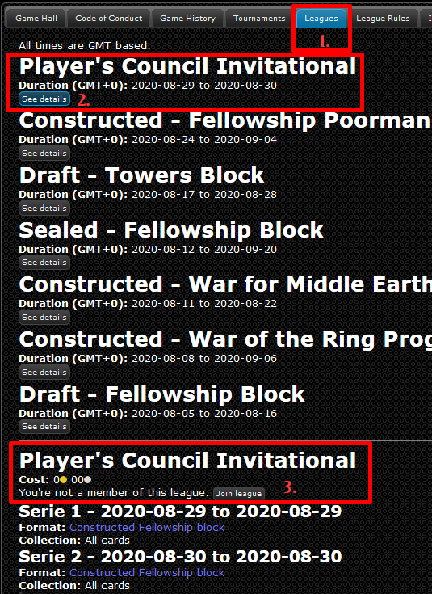

Leagues and Events
There's plenty for both of us; may the best Dwarf win!
What is a League?
A league, not to be mistaken for a tournament, is a type of event where players play multiple matches, earning points for each win towards their league point total. At the end of the league, whoever has the most points wins. Simple, right?
The Player's Council runs a monthly league over a weekend, as a chance to butt heads with everyone else and prove your mettle. Anyone may enter, and there are no entry costs (nor rewards, besides victory, which is its own reward).
The Player's Council Monthly League
This event runs the third weekend of every month (count to the third Saturday, that is the weekend it will be centered on). To ensure that as many time zones as possible can participate, the event begins at Midnight UTC Friday until Midnight UTC Monday.
(If you're American, that means that it starts evening Thursday and runs to evening Sunday.)
Each month switches off which format is ran. Every odd-numbered month (January, March, May, etc) is a Popular format, while every even-numbered month (February, April, June, etc) is an Unpopular format.
"Popular" means alternating between FOTR block and Movie, as those two formats alone are responsible for >70% of all casual games played on Gemp. We alternate back and forth on odd months; Movie then FOTR then back to Movie, etc.
"Unpopular" is our chance to shine a light on lesser-played blocks and formats. For instance, in October 2020 we ran Expanded, and that December we ran Towers Standard. The sky's the limit on these formats; so long as it's in Gemp, we'll give it a try at some point.
How to join?
The league event is ran entirely within Gemp. Create an account on Gemp, then register on the Leagues tab at the top.
See the screenshot below for details on registering:

- Go to the Leagues tab at the top,
- Find the "Players Council Monthly" league and click the "See Details" button
- Finally, click the "Join league" button.